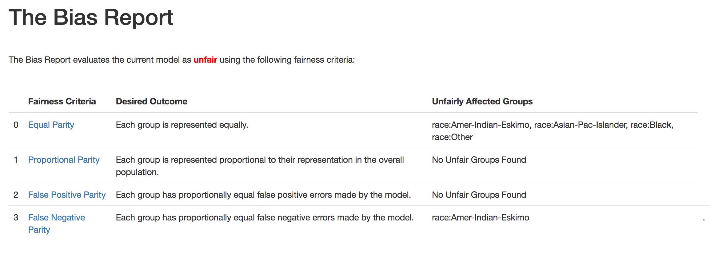
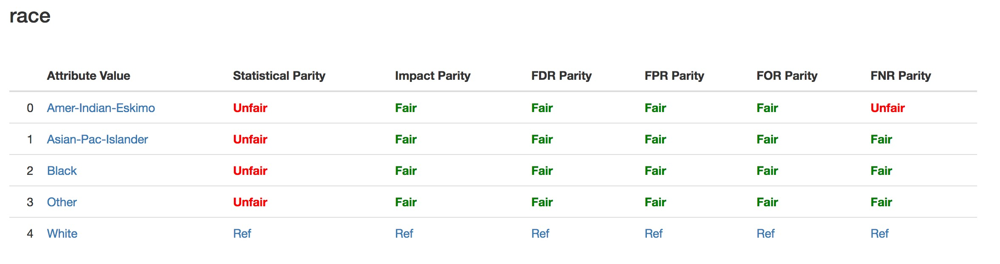
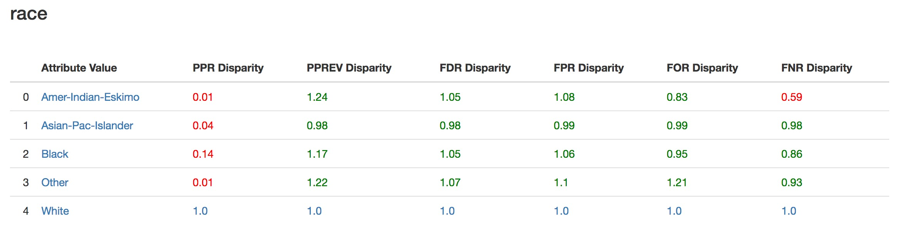
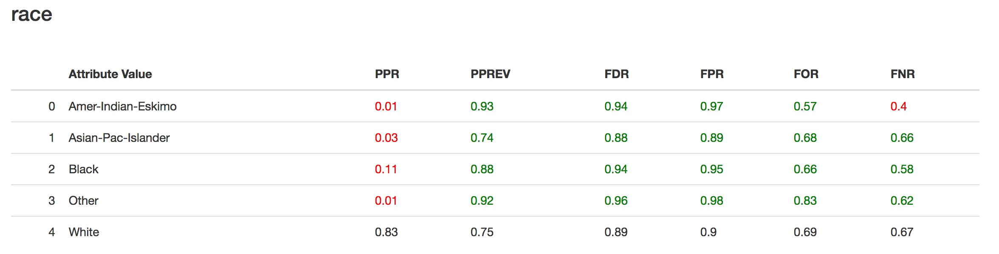

Understanding Output
Here we provide a highlevel overview of the bias and fairness metrics output by aequitas. For detailed definitions of the metrics see Understanding our metrics
Output type |
report |
csv |
|---|---|---|
High-level overview |
Yes |
No |
Fairness |
Yes |
Yes |
Disparity |
Yes |
Yes |
Group-level metrics |
Yes |
Yes |
You can get Aequitas output in report form via the webapp or CLI as well as a csv/DataFrame using the CLI or Python. Below we reproduce the tables found in the output using
Fairness overview
The webapp and pdf report begins with a high level analysis of fairness. If all fairness metrics are fair, The Bias Report will evalutate the current model as fair. Otherwise, it will deem it unfair and list groups unfairly affected under given fairness criteria. 
In the above example, we see the model has Proportional Parity and False Positive Parity, but does not meet the False Negative Parity criteria for the race Amer-Indian-Eskimo and does not have Equal Parity for many race groups. On the webapp, you can click on the names of the fairness criteria for explanations of the criteria, an example of why you care and more detailed statistics explaining why a group does not have parity.
Fairness Criteria Assessments
Fairness is defined in relation to a reference group. In the Fairness Criteria Assessments, a group meets parity if
(1 - \tau) \leq Disparity Measure_{group_i} \leq \frac{1}{(1 - \tau)}
where \tau is the fairness threshold defined in the webapp.

In our example \tau = 20\%, so any disparity measure between 0.8 and 1.25 will be deemed fair. (This is inline with the 80 percent rule for determining disparate impact).
Clicking on the word fair or unfair will bring you to the next table.
Disparity and Bias Metrics
Above Fairness was determined by the size of a disparity measure. In this table, you see the disparity measures value. Disparity is a ratio of a groups metric compared to a reference group. Notice the reference group will always have disparity of 1.

From the high-level overview, we saw that many groups did not have Equal or Statistical Parity. Here we see that the ratio of those groups Predicted Postive Rates compared to the reference group are very low.
Group Metrics
The disparities above are derived from group level metrics. 
For example, the False Positive Rate Disparity for black people compared to white people is calculated as follows.
FPR Disparity_{black} = \frac{FPR_{black}}{FPR_{white}} = \frac{.95}{.9} = 1.06